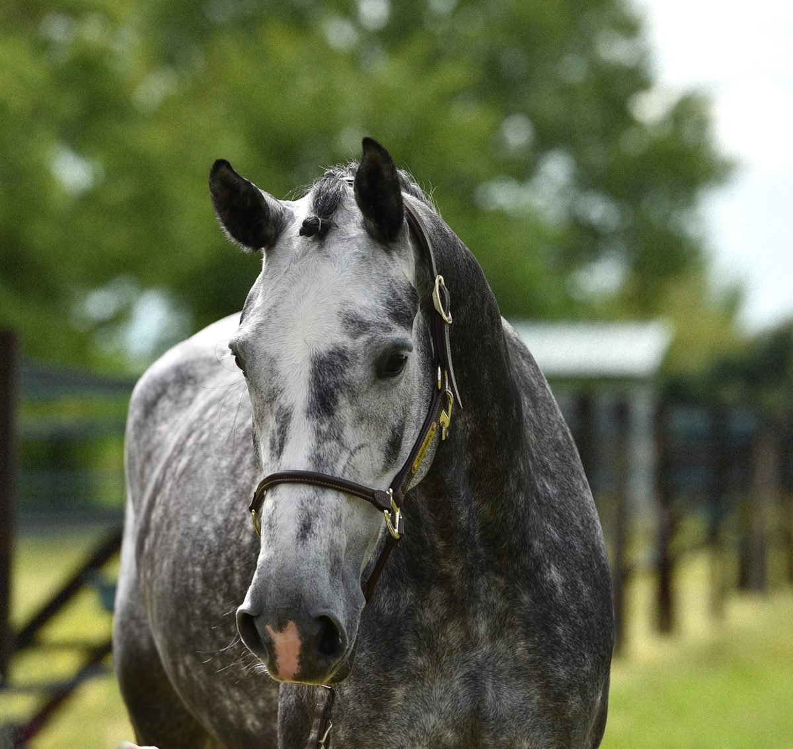
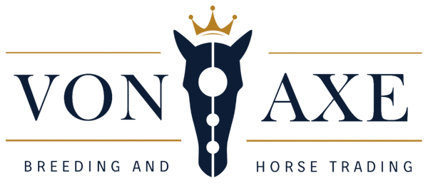
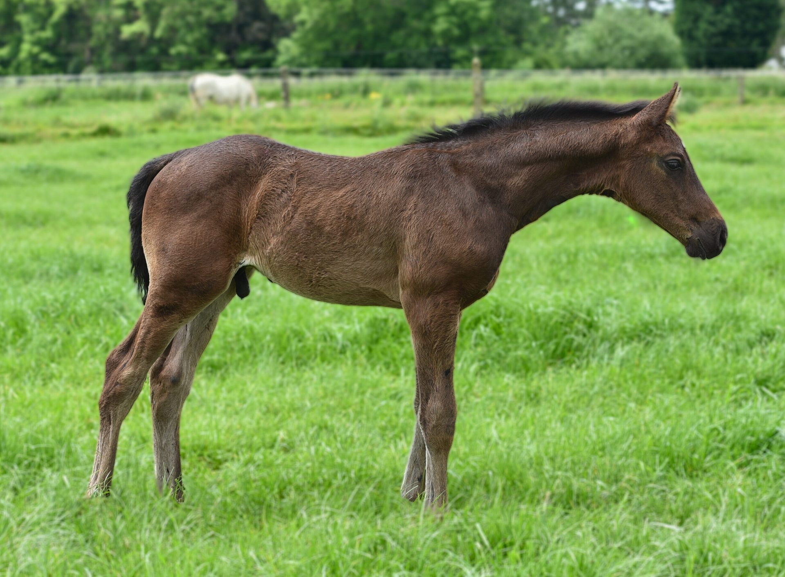
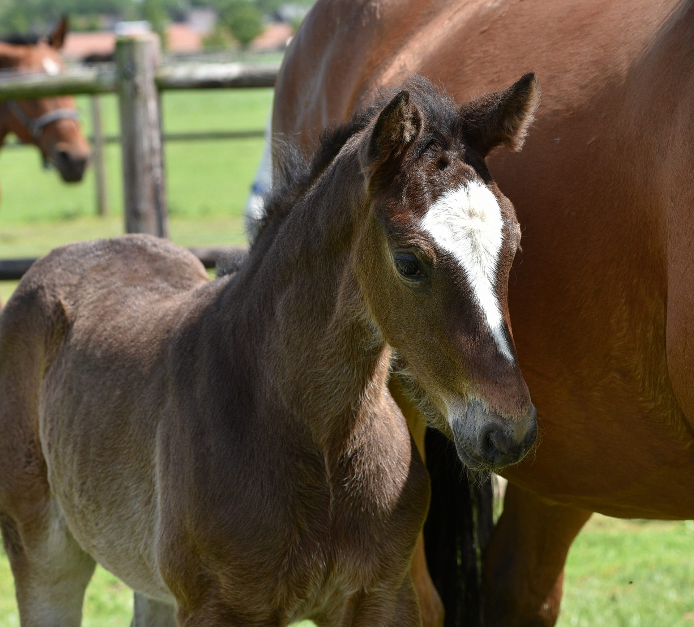
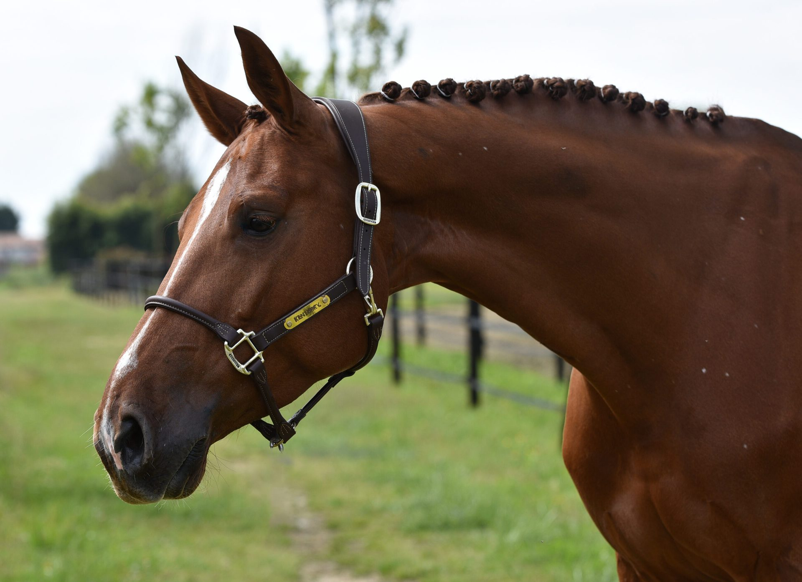
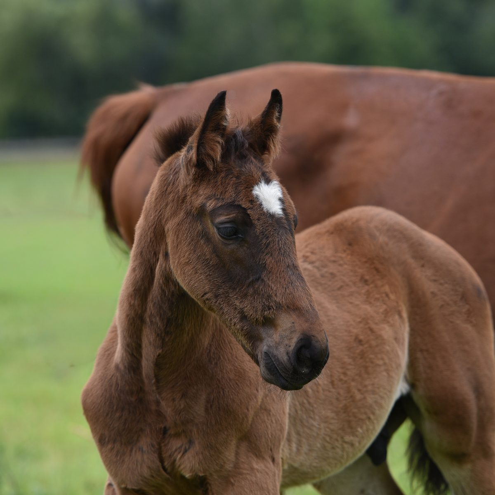
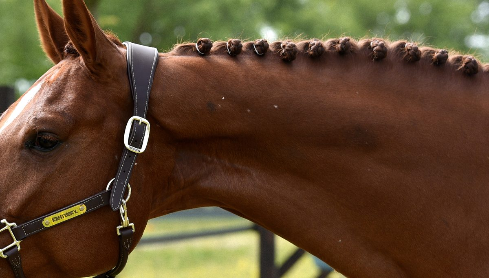
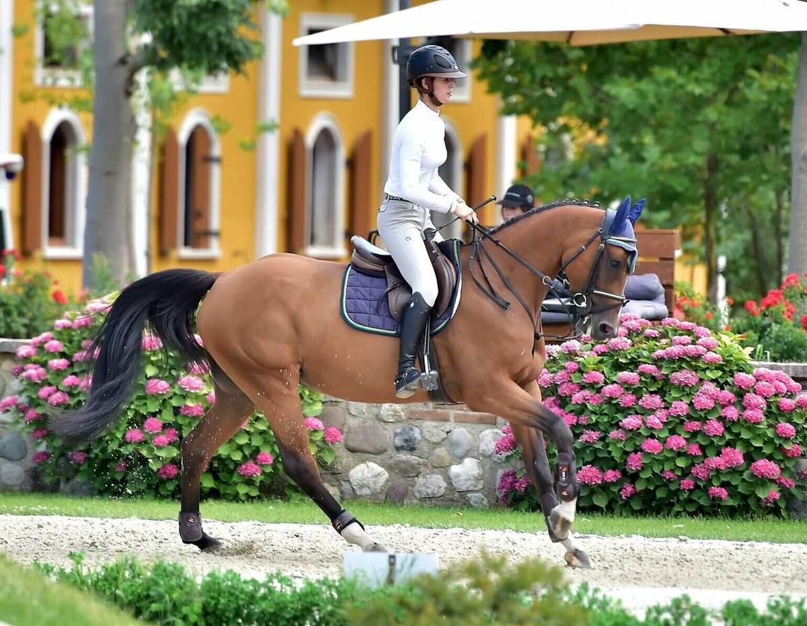

Design system
One brand, one truth.
Every page, mail or advert for Stud Von Axe starts from this document. The tokens at the top of this file are the brand: copy the :root block verbatim, never retype a value. The motto on their own site says it best. The blood never lies, and neither should the stylesheet.
Core choices
| Choice | Value | Why |
|---|---|---|
| Page ground | --color-base #faf7f2 | Light backgrounds carry content, per the client's brand rule |
| Primary ink | --color-navy #0d1d36 | Sampled from the logo file itself. Structure, headings, body |
| Accent | --color-gold #b59148 | Sampled from the head icon. The horizontal logo file carries a different gold, #b57f24, so one of the two files is wrong. Open with the client |
| Titles | Fraunces | Serif display, 400 upright. Optical sizing carries it from 18px to 80px |
| Italic accent | Fraunces italic | A real italic, so no accent word is ever a synthesised shear |
| Everything else | Manrope 400 to 800 | Body, eyebrows, labels, controls, meta lines |
| Controls | Soft squares, 12px | The logo is angular, so buttons and chips follow it. No pills |
| Accessibility floor | WCAG AA | Measured live in this page, not estimated |
Logo
One mark: horse skull, blaze with three nodes, crown, wordmark VON | AXE. Gold touches only the crown and the rule lines. The current files are raster with baked backgrounds. Vector versions are with the client, chase before production.

logo-horizontal-onlight.png

logo-horizontal-ondark.webp
| Rule | Detail |
|---|---|
| Which file, which ground | -onlight (navy mark) only on the page ground, the alternate ground or white. -ondark (white mark) only on navy. A white logo on a light ground is invisible, so the filename names its ground and the audit enforces it. |
| Clear space | Height of the crown on all sides |
| Minimum width | 140px horizontal, 90px stacked, favicon uses the skull mark alone |
| Never | Recolour, stretch, rotate, drop shadows, place on busy photo areas without a scrim |
| Derived, not supplied | The client only sent the white reverse version. The navy -onlight files are derived from it: white ink mapped to navy, gold accent kept, alpha preserved |
| [CHECK MARK] | Vector (SVG or AI) of both primary versions, requested from client |
Colour and contrast
Two layers: a raw palette (the only hex values in the codebase) and semantic tokens that name the job. Components only ever use the semantic layer. The contrast column below is computed live by this page from the rendered colours, so what you read here is what a browser actually shows.
Raw palette
| Swatch | Token | Hex | Job |
|---|---|---|---|
--color-navy | #0d1d36 | Primary ink, dark plates. Sampled from the logo | |
--color-navy-deep | #0a1526 | The darkest ground: hero, bands, footer | |
--color-navy-soft | #2c4468 | Muted structural ink | |
--color-gold | #b59148 | Accent. Sampled from the head icon | |
--color-base | #faf7f2 | Page ground | |
--color-base-alt | #f1ebe0 | The one tinted band per page. Warm, not blue | |
--color-ink | #14202e | Body copy | |
--color-ink-soft | #4d5761 | Muted body copy | |
--color-ink-invert | #eef1f5 | The footer's off white | |
--color-white | #ffffff | Cards, lifted paper |
Measured contrast
AA needs 4.5:1 for normal text and 3:1 for large text (24px, or 19px bold). Rows that fail are listed on purpose: they document what we must never do.
| Sample | Pair | Ratio | Verdict |
|---|
Typography
Manrope carries the page. Fraunces speaks only in titles, horse names and the one italic accent word per heading. Never more than one accent word. Load exactly: Fraunces:ital,opsz,wght@0,9..144,300;0,9..144,400;0,9..144,500;0,9..144,600;1,9..144,400;1,9..144,500 and Manrope:wght@400;500;600;700;800, with display=swap.
Bred for the biggest arenas
--text-statement · Fraunces 400 with one italic accent word
| Token | Size | Face | Sample |
|---|---|---|---|
--text-hero | clamp(2.625rem, 4.8vw + 1.5rem, 5.5rem) | Caslon Display 400 | Arkhana |
--text-heading | clamp(2rem, 2.6vw + 1.2rem, 3.5rem) | Caslon Display 400 | Horses with us today. |
--text-title | clamp(1.625rem, 1.4vw + 1.1rem, 2.125rem) | Caslon Display 400 | Cortina de Jolie Z |
--text-lead | clamp(1.1875rem, .6vw + 1.05rem, 1.375rem) | Manrope 400 | Foals, embryos and frozen semen. |
--text-body | clamp(1.0625rem, .35vw + 1rem, 1.125rem) | Manrope 400 | Our relationship with our customers is based on honesty. |
--text-small | .9375rem | Manrope 400 | Sold direct, never through auction. |
--text-meta | .8125rem | Manrope 400 | Colt · 2026 · Available |
--text-label | .75rem | Manrope 700, tracked .22em, uppercase | Available now |
Spacing
Eight steps plus one sectional rhythm. Between sections use --space-section, inside components stay on the scale. Never a bare pixel value.
| Token | Value | Bar |
|---|---|---|
--space-1 | .25rem | |
--space-2 | .5rem | |
--space-3 | .75rem | |
--space-4 | 1rem | |
--space-5 | 1.5rem | |
--space-6 | 2rem | |
--space-7 | 3rem | |
--space-8 | 4rem | |
--space-section | clamp(3.5rem, 6.5vw, 6.5rem) |
Radius and shadow
A deliberate radius scale, not one value. Photography 12, cards 16, plates 22, controls 12, chips 8. The logo is angular, so nothing is a full pill.
12
photo
photo
16
card
card
22
plate
plate
8
chip
chip
shadow-sm
shadow
shadow-lg
Motion
| Token | Value | Use |
|---|---|---|
--ease | cubic-bezier(0.32, 0.08, 0.24, 1) | Everything |
--dur | 650ms | Scene changes: hero crossfade, panel swaps |
--dur-fast | 300ms | Hover, focus, small state |
Reveal on scroll is a single fade with a 12px rise, once, never re-triggered. Respect prefers-reduced-motion everywhere: reveals render instantly and the hero autoplay never starts. The one exception to the brand's "nothing moves on its own" principle is the hero service slider, at Mark's explicit request, and it is documented under Decisions.
Tone of voice
Researched on studvonaxe.it (homepage and about page, August 2026). The brand speaks as we, with warm pride backed by hard facts. Their own words set the register.
| Trait | Their own evidence |
|---|---|
| Motto | "THE BLOOD NEVER LIES" |
| Values | "honesty and absolute transparency in all our sales" |
| Origin | "born from a great passion for horses", "many years spent on the best German farms" |
| Pride | "Proud of our Stud Von Axe's horses around the world", "A great mare with an amazing family!" |
| Facts | Pedigrees in brackets "(Casall x Contender x Corrado)", real prices, real placings |
The register in practice
| Place | Example sentence, ready to use |
|---|---|
| Hero | Bred for the biggest arenas. |
| Section head | Horses with us today. |
| Body | Every cross begins in Italy. Our team in Belgium raises each foal until it is ready to leave. |
| Trust line | Sold direct, never through auction. |
| Button | Ask about Arkhana |
| Result | Contouch SVA (Conthargos x Toulon x Cento) sold for 150,000 euro, the top price of the auction. |
Short headlines. Slightly longer narrative body. First person plural. Pride is allowed, exaggeration is not: every claim must trace to a result, a price or the client's own words.
Writing rules
| Rule | Wrong | Right |
|---|---|---|
| No long dashes as a style pause | Our mares, our choice — always. | Our mares, our choice. Always. |
| No decorative dash before an eyebrow | – AVAILABLE NOW | AVAILABLE NOW |
| No number before an eyebrow either | 01 · THE STUD | THE STUD |
| Write ranges out | Foals of 2024-2026 | Foals from 2024 to 2026 |
| Human English | Leveraging elite genetics for seamless results | We breed from mares we know, and we sell direct |
| Never invent | Over 40 years of tradition | [CHECK MARK: founding year] or leave it out |
Words we avoid: innovative, solutions, seamless, effortless, world class, elite (unless quoting the client). Words that belong: damline, cross, produce, studbook, colt, filly, broodmare, direct. Words we replaced: pairing became cross, mediation became brokering, on the record became news and results.
Buttons
Soft squares in Manrope 700 uppercase. Gold always carries navy ink: white on gold is about 3.2:1 and fails AA, measured above. On dark grounds use the ghost.
Eyebrow and section heading
The header is a plate, not a band: held to the page gutter so its edge lines up with the content below it, rounded with --plate-radius, glass over the hero and paper once the hero is behind it. Every section opens with the plaque: number, middle dot, label. Then a serif heading with exactly one italic accent word. Never more than one.
Available now
Horses with us today.
The programme
One programme across two countries.
Chips and status
Belgian base
Featured
15 crosses
Sold · GB
Sold status is quiet text naming the destination country. It doubles as proof of reach: no flags, no ribbons, no invented country counts.
Cards
Horse card, with photo
Comme il Faut
× Nabab de Reve
× Jalisco B
Carma vd Berghoeve Z
The typographic variant is not a fallback of laziness, it is the provenance rule: a photo may only name a horse when it comes from that horse's own listing. Carma and Electra have no valid photo, so their pedigree becomes the picture.
News card
Auction
Contouch SVA takes top price at Your Auction
Sold for 150,000 euro, the highest price of the auction, and now competing internationally.
Result row
1st
Calleryama wins the Nations Cup of BarcelonaCasall x Contender x Corrado · dam of Unguessable Von Axe
Glass card (hero banner)
Foals
Born and raised at our Belgian base, out of mares chosen for jumping ability and temperament.
See the foalsTrust strip
Proven damlinesCrosses on pedigree and produce
Two basesItaly and Belgium, one programme
Sold directNever through auction
EU and exportSemen through Avantea, Cremona
Forms
That address does not look complete.
Tabs and accordion
Every horse currently with us, foals and broodmares together.
Foals born at the Belgian base, sold direct.
The broodmare band behind the programme.
Accordion
How does a semen order work?
Frozen semen ships through Avantea in Cremona, across the EU and for export. Ask us for the current terms per stallion.
Can we visit the horses?
Yes. The crosses are made in Italy and the foals are raised in Belgium, tell us what you want to see and we plan it.
Hero service slider
The homepage hero in miniature, fully working. The backdrop drifts in as it crossfades (650ms), the glass banner carries the active service, the tabs are a real ARIA tablist: arrow keys move focus with selection, Home and End jump. Autoplay runs at 6 seconds, pauses on hover and focus, stops for good after a click, and never starts under prefers-reduced-motion.



Foals
Born and raised at our Belgian base, out of mares chosen for jumping ability and temperament.
See the foalsImagery
Photography carries the living horses; typography carries the genetics. All photos come from the client's own listings, optimised to 1200px (sections) or 1920px (hero), JPG quality 82, everything under 500 KB. Every photo sits in a 12px radius. Full-bleed backdrops need at least a 1280px source: Agousha, Charina and Unique Touch stay card-size only.



Light and dark sections
The ivory ground carries the page. Dark navy moments are rationed: the hero, at most two content bands, and the footer, and no two dark grounds may ever touch. One tinted band per page at most, and it is the warm alternate rather than a blue. Gold is never a ground, only an accent.
Hero (dark)
About (light)
Services (cards on light)
Sport horses (dark plate)
Foals and broodmares (light)
News (sky tint, the one tinted band)
Instagram and contact (light)
Footer (dark)
States, 404 and cookie banner
Loading
Empty and error
Nothing here right now.
New foals arrive through the season. Ask us what is coming.
404 pattern
Cookie banner
Icons
House rule from the project brief: unicode characters only, no icon libraries. This overrules the generic process default (Lucide). The full working set:
| Glyph | Name | Use |
|---|---|---|
| → | arrow | Text CTAs |
| ↗ | external | Links leaving the page |
| ◈ | node | Damlines, genetics |
| ◎ | arch | The two bases |
| ✓ | check | Trust facts |
| · | dot | Meta separators |
| ♔ | crown | Sparingly, the logo's crown moment |
| ✕ | close | Dismiss |
| ☰ | menu | Mobile nav |
Decisions and flags
| Decision | Status |
|---|---|
| Hero autoplay (6s, pause on hover and focus, stop after click, off under reduced motion) deviates from the briefing principle "nothing moves on its own" | Mark's explicit choice, 25 Aug 2026 |
| Bases named Desenzano del Garda and Lanaken (the old site's Castelnuovo address predates the 2026 briefing) | Assumption, follows the newer briefing |
| Sport horses service copy is newly written, not on the client site yet | [CHECK MARK: sport horses wording] |
| Instagram section is a static grid linking to the real profile, no embedded feed | Feed embed is a later WordPress step |
| Vector logo and gold Pantone | [CHECK MARK: with client] |
| Feedback colours (success, error, warning) are proposed, the client brand has none | Proposed |
Token table
The complete :root, ready to copy. This is the same block that powers this very page.